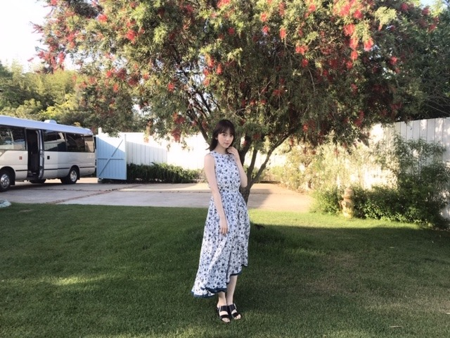
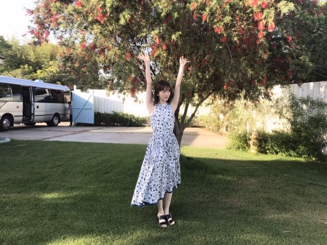
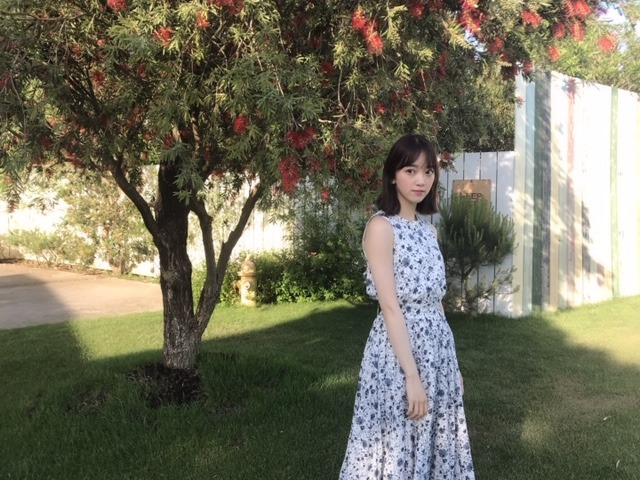

2019/0604Tueパプリィカァ
今日19:57〜うたコン
生放送です！
sing out! 以外にも出ます！よ！
見てねー！！



この間の撮影終わりに、天気が良かったのでマネージャーさんに写真を撮ってもらいました(^-^)
私服はワンピースやセットアップが多いです。
らくちん。
サングラスが好きで集めていて、今年も新入りが続々と増えていってます。ふふ
天気が良いと気分も上がりますね
よし うたコン楽しみまーす！
みてね？♡
2019/06/04 13:30
コメント(280)
かわいい〜♡ワンピースどこのブランド？
うたコンみるよー
堀ちゃんブログありがと！
うたコン見逃しちゃいました泣
すいません
うたコン見逃しちゃいました泣
すいません
かわいい！
ホットギミックの映画で上海まで行っちゃうんだね？。
女優賞にもノミネートされて、まさにこの映画で女優になれたね笑
アイドルなのに女優だなんて凄いな～
女優賞にもノミネートされて、まさにこの映画で女優になれたね笑
アイドルなのに女優だなんて凄いな～
堀ちゃん、大好きだよー
良かったよ～＾＾
どうもかずです。
うたコン見逃しました。
どこかで見れることを願います。
今日もコメしようと思っていましたが訳あってエビデンスベースのお話が出来なくなるかもしれません。
多分大丈夫だと思いますが、しばしお待ちを。
では。
うたコン見逃しました。
どこかで見れることを願います。
今日もコメしようと思っていましたが訳あってエビデンスベースのお話が出来なくなるかもしれません。
多分大丈夫だと思いますが、しばしお待ちを。
では。
ライブめちゃくちゃ可愛いかったです！
未央奈ちゃん、ひろっしーです！コメント投稿590回目です！
前回はブログ「頭の上に手」に「週刊少年サンデー」の感想を含む本屋での出来事を書きました！
時間→「No.317 2019年5月31日 02:28」
ブログ更新ありがとうございます！
コメント遅くなってしまい申し訳ありません！ですが、勿論ブログは毎回拝見しています！
「週刊少年サンデー」のオフショットだったり乃木坂のメンバーである事の有り難みだったり休日は5度寝だったり好きな音楽の事だったりめるみおなで夢の国へ行った事だったり近況を知れて凄く嬉しかったです！しかも告知も沢山あり、大活躍されている事がよく分かります！
こないだの「Mステ」観ました！登場シーンで「レコメン！」ポーズされていましたね！
上智大学ゴスペル隊の皆さんとのSPコラボ、「うたコン！」も出番多くて嬉しかったです！最初かずみんとぶつかってしまいましたね(汗)
でも、かずみんギリギリ間に合って良かった！今回は凄く生放送の感じが伝わりました！
今「レコメン！」聴きながら書いています！
「アイドル顔だけ総選挙」見事5位おめでとうございます！良かったね！僕も凄く嬉しいよ！投票した甲斐がありました！
最後に、第22回上海国際映画祭のアジア新人部門・優秀女優賞にノミネートされたそうで、おめでとうございます！本当に凄い事だと思います！しかも、最優秀賞を受賞したら初の快挙ですし、なんか未央奈ちゃんがどんどん遠くに行ってしまうような、ニュースを読んでいたらそんな感覚になりました！
でも、今「レコメン！」を聴いていると普段の未央奈ちゃんなんだよなぁ！なんか不思議～！
とにかくこの授賞式で未央奈ちゃんに1番良い景色をプレゼント出来たらなと思っています！
ここまで読んで頂きありがとうございました！
毎日お仕事お疲れ様です！体調にはくれぐれも気を付けて頑張ってくださいね！
おやすみおな～！
前回はブログ「頭の上に手」に「週刊少年サンデー」の感想を含む本屋での出来事を書きました！
時間→「No.317 2019年5月31日 02:28」
ブログ更新ありがとうございます！
コメント遅くなってしまい申し訳ありません！ですが、勿論ブログは毎回拝見しています！
「週刊少年サンデー」のオフショットだったり乃木坂のメンバーである事の有り難みだったり休日は5度寝だったり好きな音楽の事だったりめるみおなで夢の国へ行った事だったり近況を知れて凄く嬉しかったです！しかも告知も沢山あり、大活躍されている事がよく分かります！
こないだの「Mステ」観ました！登場シーンで「レコメン！」ポーズされていましたね！
上智大学ゴスペル隊の皆さんとのSPコラボ、「うたコン！」も出番多くて嬉しかったです！最初かずみんとぶつかってしまいましたね(汗)
でも、かずみんギリギリ間に合って良かった！今回は凄く生放送の感じが伝わりました！
今「レコメン！」聴きながら書いています！
「アイドル顔だけ総選挙」見事5位おめでとうございます！良かったね！僕も凄く嬉しいよ！投票した甲斐がありました！
最後に、第22回上海国際映画祭のアジア新人部門・優秀女優賞にノミネートされたそうで、おめでとうございます！本当に凄い事だと思います！しかも、最優秀賞を受賞したら初の快挙ですし、なんか未央奈ちゃんがどんどん遠くに行ってしまうような、ニュースを読んでいたらそんな感覚になりました！
でも、今「レコメン！」を聴いていると普段の未央奈ちゃんなんだよなぁ！なんか不思議～！
とにかくこの授賞式で未央奈ちゃんに1番良い景色をプレゼント出来たらなと思っています！
ここまで読んで頂きありがとうございました！
毎日お仕事お疲れ様です！体調にはくれぐれも気を付けて頑張ってくださいね！
おやすみおな～！
未央奈、ラジオおつかれ(￣Д￣)ﾉ笑
のりサファリパーク案件はなかなかのレアケースで今後が楽しみですね。
うたコンでのSingOut!冒頭、かずみんとの接触で全く動じない堀ちゃんの体幹の強さには感心しました。
そして一瞬で感動的な世界観を生み出すパフォーマンスに魅せられました。
のりサファリパーク案件はなかなかのレアケースで今後が楽しみですね。
うたコンでのSingOut!冒頭、かずみんとの接触で全く動じない堀ちゃんの体幹の強さには感心しました。
そして一瞬で感動的な世界観を生み出すパフォーマンスに魅せられました。
みおなー♡おはよー
うたコンみたよ～♪
可愛かったー
セーラームーン良かった
暑いけど今日も１日頑張ろー
うたコンみたよ～♪
可愛かったー
セーラームーン良かった
暑いけど今日も１日頑張ろー
堀さん、おはようございます♪
うたコンを見ました。
セーラームーンの曲を高山さんや井上さんが
歌ってました。
井上さんがトークをしてたので
うれしかったです。
僕はセーラームーンは、セーラーマーズ
という赤い服を着たメンバーが推しメンです。
シングアウトも聴きました。
今回の新曲はゆっくりとした曲なのですね。
ＭＶでも聴きました。
体育館のような場所で最後の方にアスレチックの
ようなものが現れる映像になっていました。
ではまたコメントしますね☆
うたコンを見ました。
セーラームーンの曲を高山さんや井上さんが
歌ってました。
井上さんがトークをしてたので
うれしかったです。
僕はセーラームーンは、セーラーマーズ
という赤い服を着たメンバーが推しメンです。
シングアウトも聴きました。
今回の新曲はゆっくりとした曲なのですね。
ＭＶでも聴きました。
体育館のような場所で最後の方にアスレチックの
ようなものが現れる映像になっていました。
ではまたコメントしますね☆
未央奈ちゃん、おはようございます。
最近の活躍、嬉しい限りです。
ウタコンは沢山沢山映ったから、とっても嬉しかった。可愛くとか、凛としてとか、綺麗とかで映ってたよ。録画したからまた見返します。
レコメンの顔だけ総選挙第5位おめでとう。いつも上位だから安心しています。
映画祭ノミネートも凄いです‼未央奈ちゃん推しとしてこれも嬉しいお知らせですね。ホットギミックの公開が楽しみで待ち遠しい。
もうすぐ梅雨入りだけど良い体調で過ごしてくださいね。
乃木坂46と頑張ってるcuteでsmartな未央奈ちゃんを応援しています。
最近の活躍、嬉しい限りです。
ウタコンは沢山沢山映ったから、とっても嬉しかった。可愛くとか、凛としてとか、綺麗とかで映ってたよ。録画したからまた見返します。
レコメンの顔だけ総選挙第5位おめでとう。いつも上位だから安心しています。
映画祭ノミネートも凄いです‼未央奈ちゃん推しとしてこれも嬉しいお知らせですね。ホットギミックの公開が楽しみで待ち遠しい。
もうすぐ梅雨入りだけど良い体調で過ごしてくださいね。
乃木坂46と頑張ってるcuteでsmartな未央奈ちゃんを応援しています。
未央奈ちゃん、おはよう
うたコン見ましたよ
今日も１日頑張りましょう
あと、ブログ更新ありがとね
うたコン見ましたよ
今日も１日頑張りましょう
あと、ブログ更新ありがとね
ぶー吉ちゃんこと(君らしさ参照)未央奈ちゃんおはよー ✨☀️悔しい レコメンの恒例企画第七回アイドル顔だけ総選挙5位。せっかく、古川さんが応援に来てくれたのに。古川さんも、オテンキのりさんも未央奈ちゃんにとっては、バナナマンさん同様、芸能界のお兄ちゃんだからね‼️未央奈ちゃんの魅力は顔だけじゃなく、沢山魅力もってますが、まず未央奈を大好きになったきっかけが、スカッとジャパンで初めて未央奈ちゃんを見て一目惚れしたからです。それから色々調べたたら、顔だけじゃなく、最初の頃は心も体も弱かったが、先輩や同期の2期生やファンの方々、マネージャーさんをはじめスタッフさん、家族など沢山の方々に支えられ、努力し続けて自信がついて、ポジティブになり、性格も明るくなり笑顔が増え更に大好きになりました。まだ直接会えてないけど、未央奈ちゃんに画面を通してだけですが、めぐり会えて凄く嬉しい。前にも書きましたが、本当に乃木坂に入ってくれて本当にありがとう 一時期辞めようか迷ってたとき、辞めないでいてくれてありがとう 沢山笑顔をありがとう 未央奈ちゃんをはじめ、乃木坂46の皆が頑張っている姿を見ていると、私も負けないように頑張らなくちゃと思っています。今日も１日未央奈ちゃんが元気で幸せに過ごせますように 大好きやおー
ブログ更新ありがとう〜！
うたコンすごく可愛くて癒されました⸜(*ˊᵕˋ*)⸝Sing Out！のヒット祈願でも思ったけれど、子どもたちの前だと未央奈ちゃんの優しさが爆発していて素敵だなって思います♡
かずみんにぶつかられていたけれど大丈夫だったかな？(＞＜)笑
表情さえも変えないプロ意識に驚きました。
ワンピースすごく似合っているし、景色も相まって写真集のカットみたいです！可愛い♡
そして！上海国際映画祭のアジア新人映画部門・優秀女優賞ノミネートおめでとう！！
知った時は本当に震えました…自分のことのように嬉しいです(T_T)
移動も大変だし緊張すると思うけど、レッドカーペット楽しんできてください︎☺︎
うたコンすごく可愛くて癒されました⸜(*ˊᵕˋ*)⸝Sing Out！のヒット祈願でも思ったけれど、子どもたちの前だと未央奈ちゃんの優しさが爆発していて素敵だなって思います♡
かずみんにぶつかられていたけれど大丈夫だったかな？(＞＜)笑
表情さえも変えないプロ意識に驚きました。
ワンピースすごく似合っているし、景色も相まって写真集のカットみたいです！可愛い♡
そして！上海国際映画祭のアジア新人映画部門・優秀女優賞ノミネートおめでとう！！
知った時は本当に震えました…自分のことのように嬉しいです(T_T)
移動も大変だし緊張すると思うけど、レッドカーペット楽しんできてください︎☺︎
『女性アイドル顔だけ総選挙2019』
未央奈ちゃん5位おめでとう！。
あれだって中日は交流戦唯一の勝利がなく連敗
スタートで最下位転落の危機だって！さすがに
頑張ってほしいよね！
未央奈ちゃんはセ・パ交流戦は楽しみ？
毎年、6月になると楽しみになってくるよね！
初戦がソフトバンクと当たり。次はパリーグ
首位の楽天と本拠地で当たるからどちらも強い
相手。
未央奈ちゃん5位おめでとう！。
あれだって中日は交流戦唯一の勝利がなく連敗
スタートで最下位転落の危機だって！さすがに
頑張ってほしいよね！
未央奈ちゃんはセ・パ交流戦は楽しみ？
毎年、6月になると楽しみになってくるよね！
初戦がソフトバンクと当たり。次はパリーグ
首位の楽天と本拠地で当たるからどちらも強い
相手。
未央奈まじ可愛いー！
好きですー！
好きですー！
こんばんは
レコメン総選挙上位は当然ですよね✨
絢音ちゃんに負けたのは悔しいけど(笑)、
俺にとっての一位は絶対に揺るぎません☆
蘭世ちゃんのランクインも嬉しかったし、
古川さんの愛情もとても嬉しいですよねー♪
みおちゃんのワンピース姿は悩ましいです！
気温に負けないくらいに熱が上がりました♡
夏に現れた白い爽やかな蜃気楼みたいです☺
レコメン総選挙上位は当然ですよね✨
絢音ちゃんに負けたのは悔しいけど(笑)、
俺にとっての一位は絶対に揺るぎません☆
蘭世ちゃんのランクインも嬉しかったし、
古川さんの愛情もとても嬉しいですよねー♪
みおちゃんのワンピース姿は悩ましいです！
気温に負けないくらいに熱が上がりました♡
夏に現れた白い爽やかな蜃気楼みたいです☺
未央奈ちゃん大好きです
かわいい～
応援してます
かわいい～
応援してます
いや～。来月から、もうツアーが名古屋から
スタート！だね早いよ！
6月に入り、あっという間に7月になるんだろうな
まだ梅雨でしばらくは雨だね？
7月の後半から、本格的な夏が来る。
ドームは安心なんだけど、屋外は蒸し暑そう！
8月の最後は残暑があり、まだ少し暑いね。
スタート！だね早いよ！
6月に入り、あっという間に7月になるんだろうな
まだ梅雨でしばらくは雨だね？
7月の後半から、本格的な夏が来る。
ドームは安心なんだけど、屋外は蒸し暑そう！
8月の最後は残暑があり、まだ少し暑いね。
堀ちゃんこんばんは！
上海国際映画祭、新人部門・優秀女優賞ノミネート！ほんとに凄い！！
でも、おめでとうは受賞の日までとっておきますね(^^)
…と、言いたいところですが、おめでとうございます！！！！
やはり祝いの言葉を我慢はできません、めちゃくちゃ凄いと思ってますもん！笑
改めておめでとうと言える日を迎えられること、心から願っています(o^^o)
ホットギミック公開もほんとに楽しみだー！( ´ ▽ ` )
そしてもちろんうたコンも見ました！
最近ひたすら思うんですが、Sing Out!って堀ちゃんのダンスが特に輝いてるなぁと( ´ ▽ ` )
Sing Out!はゆったりした曲調ですが、振り付けとしては大きくて素早い腕の動きが多い気がするんです。
個人的に堀ちゃんの腕の動きが凄く綺麗で好きで、今回もダイナミックな動きでもブレることなく淀みのない姿が曲調とピッタリで曲も輝くし堀ちゃんも輝く、めちゃくちゃ素敵な時間になってるなぁと感じています！
と、ダンスを習ったこともないですが勝手に感じてることを書いてしまいました笑
とにかく堀ちゃんのダンスが大好きなんです！( ´ ▽ ` )
普段は可愛い！が第一にくるんですが、踊っている堀ちゃんは綺麗、もしくはカッコいいな〜って思います、女性としての格好良さ(^^)
そしてパプリカのときの堀ちゃんはめちゃめちゃ可愛かったです、ギャップがまた素敵です(*´ー｀*)♩
楽しそうに笑顔で踊ってるシーンとか感動するぐらい可愛いですし、グッと膝を曲げて体を下げてハイタッチを迎える姿を見ると、そういう人柄も大好きだなぁと感じます(o^^o)
いやはや、改めて本当に大好きです堀ちゃん( ´ ▽ ` )
いつも気持ちを高揚させてくれるパフォーマンスをありがとう( ´ ▽ ` )
突き抜けた可愛さで癒しをくれてありがとう( ´ ▽ ` )
そして今日も755で楽しい時間をありがとう( ´ ▽ ` )
たくさん幸せをもらってるので、これからもたくさんありがとうって言いにきますね(o^^o)笑
では、長くなってしまったのでこの辺で！
またコメントさせてくださいー！( ´ ▽ ` )
上海国際映画祭、新人部門・優秀女優賞ノミネート！ほんとに凄い！！
でも、おめでとうは受賞の日までとっておきますね(^^)
…と、言いたいところですが、おめでとうございます！！！！
やはり祝いの言葉を我慢はできません、めちゃくちゃ凄いと思ってますもん！笑
改めておめでとうと言える日を迎えられること、心から願っています(o^^o)
ホットギミック公開もほんとに楽しみだー！( ´ ▽ ` )
そしてもちろんうたコンも見ました！
最近ひたすら思うんですが、Sing Out!って堀ちゃんのダンスが特に輝いてるなぁと( ´ ▽ ` )
Sing Out!はゆったりした曲調ですが、振り付けとしては大きくて素早い腕の動きが多い気がするんです。
個人的に堀ちゃんの腕の動きが凄く綺麗で好きで、今回もダイナミックな動きでもブレることなく淀みのない姿が曲調とピッタリで曲も輝くし堀ちゃんも輝く、めちゃくちゃ素敵な時間になってるなぁと感じています！
と、ダンスを習ったこともないですが勝手に感じてることを書いてしまいました笑
とにかく堀ちゃんのダンスが大好きなんです！( ´ ▽ ` )
普段は可愛い！が第一にくるんですが、踊っている堀ちゃんは綺麗、もしくはカッコいいな〜って思います、女性としての格好良さ(^^)
そしてパプリカのときの堀ちゃんはめちゃめちゃ可愛かったです、ギャップがまた素敵です(*´ー｀*)♩
楽しそうに笑顔で踊ってるシーンとか感動するぐらい可愛いですし、グッと膝を曲げて体を下げてハイタッチを迎える姿を見ると、そういう人柄も大好きだなぁと感じます(o^^o)
いやはや、改めて本当に大好きです堀ちゃん( ´ ▽ ` )
いつも気持ちを高揚させてくれるパフォーマンスをありがとう( ´ ▽ ` )
突き抜けた可愛さで癒しをくれてありがとう( ´ ▽ ` )
そして今日も755で楽しい時間をありがとう( ´ ▽ ` )
たくさん幸せをもらってるので、これからもたくさんありがとうって言いにきますね(o^^o)笑
では、長くなってしまったのでこの辺で！
またコメントさせてくださいー！( ´ ▽ ` )
見ます！
こんばんは！
今日は関東や東北の南部などで梅雨入り、雨のシーズンを迎え、憂鬱になるけども楽しく乗り切りましょう。
そして今日、日向坂の齊藤京子ちゃんが「ar」のレギュラーモデル就任の発表がありました。
先輩として、是非ともアドバイスをしながら、一緒にランウェイを歩いてほしい。
今日は関東や東北の南部などで梅雨入り、雨のシーズンを迎え、憂鬱になるけども楽しく乗り切りましょう。
そして今日、日向坂の齊藤京子ちゃんが「ar」のレギュラーモデル就任の発表がありました。
先輩として、是非ともアドバイスをしながら、一緒にランウェイを歩いてほしい。
未央奈ちゃんが持ってるワイヤレスイヤホン
欲しいんだけど、何処に売ってるのかなって？
朝、仕事行くとき音楽聞いていってて、ワイヤレスイヤホンの方が楽でいいじゃん！
紐があると邪魔で仕方ないんだよ。
欲しいんだけど、何処に売ってるのかなって？
朝、仕事行くとき音楽聞いていってて、ワイヤレスイヤホンの方が楽でいいじゃん！
紐があると邪魔で仕方ないんだよ。
パプリィカァ！
いい曲だよね。
うたコンみたよ〜〜
パプリカの曲と一緒に踊ったりしててかわいかったー！！♡
すごくポカポカしてそうなとこで撮影してたんだね。かわいい服〜♪
ワンピース、セットアップいいね。☺︎
サングラス姿も見せて〜
そだね。今日とかすごく良い気分だった♪
明日も楽しく過ごしましょ！o(･x･)/
いい曲だよね。
うたコンみたよ〜〜
パプリカの曲と一緒に踊ったりしててかわいかったー！！♡
すごくポカポカしてそうなとこで撮影してたんだね。かわいい服〜♪
ワンピース、セットアップいいね。☺︎
サングラス姿も見せて〜
そだね。今日とかすごく良い気分だった♪
明日も楽しく過ごしましょ！o(･x･)/
しっかり見たよ(笑)
パプリカのやつめっちゃかわいかった！！


うたコン素敵でしたよー！！
生放送の醍醐味も伝わってきましたし、
Sing Out！圧倒的に素晴らしかったです☆
パプリカ等もとっても楽しめましたし、
みおちゃんが沢山映ってて嬉しかったです♡
女優賞のノミネートおめでとうございます✨
今夜のレコメン！での受賞式も楽しみです♪
生放送の楽しいひとときにワクワクします☺